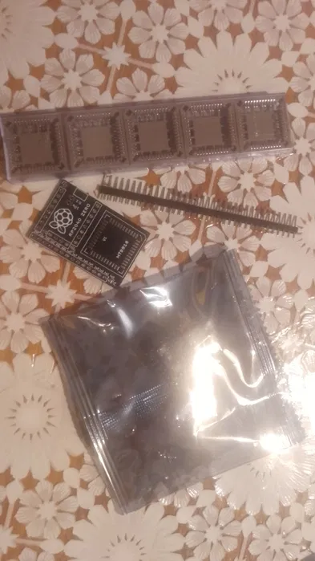

USB → ZX Spectrum конвертер — це надійний апаратний міст між сучасними периферійними пристроями та класичною архітектурою 8-бітних комп'ютерів.
Товар постачається у вигляді радіоконструктора для самостійної збірки. Модуль перехоплює скан-коди від звичайної дротової або бездротової **USB-клавіатури** і миттєво комутує відповідні лінії адреси та даних, повністю імітуючи рідну механічну матрицю замикання клавіш ZX Spectrum. Це дозволяє використовувати сучасну та комфортну клавіатуру без внесення незворотних змін чи деструктивних модифікацій у плату оригінального ПК.
Обчислювальним серцем пристрою є потужний двоядерний мікроконтролер **RP2040**. Завдяки високій тактовій частоті та оптимізованому коду, затримка введення (input lag) повністю відсутня. Пристрій підтримує гнучке оновлення прошивки через вбудований USB-порт, що дає змогу користувачеві самостійно налаштовувати розкладку клавіш, додавати макроси, емулювати специфічні функціональні кнопки або адаптувати таймінги роботи під нестандартні клони Spectrum-архітектури.
Ідеальне інженерне рішення для:
• Монтажу плат комп'ютерів у кастомні або сучасні корпуси (наприклад, mini-ITX)
• Відновлення працездатності рідкісних ретро-пристроїв із втраченою чи пошкодженою оригінальною клавіатурою
• Повсякденного комфортного написання коду на Бейсіку, ігор та повного занурення у ретро-комп'ютинг.
Просто зберіть набір, підключіть до роз'ємів клавіатури вашого Спектрума — і система готова до роботи!
